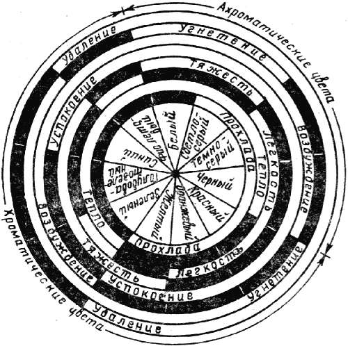
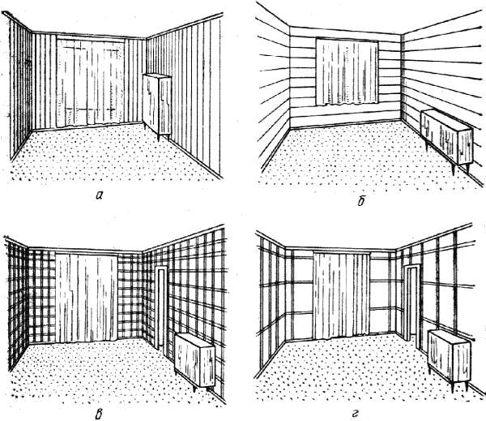

Психофизиологическое воздействие цвета.

При оформлении жилого интерьера цвет играет первостепенное значение. От того, насколько удачно сочетаются цвета посредством носителей – потолка, стен, пола, мебели, ковров и других предметов, – зависят уют в доме и настроение, проживающих в нем. При удачном решении цвет несет нам жизнерадостность, бодрость, обеспечивает полноценный отдых. И наоборот, неумелое применение цвета таит большую опасность: возможно появление состояния напряженности, неуверенности, подавленности, которые неизбежно отражаются на психике.
Психофизиологическое воздействие на человека оказывает ряд факторов: цветовой тон, насыщенность, яркость, светлота, цветная адаптация, освещенность, цветовые контрасты и гармония.
Различные цвета по-разному воспринимаются человеком: создают хорошее настроение или плохое, повышают или снижают активность. Воздействие цвета на психику человека основано на его свойствах иллюзорно производить впечатление простора или подавлять, создавать чувства тепла или холода, покоя или движения.

Рис. 7. Воздействие цвета на психическое состояние человека
Более активно воздействуют на человека теплые цвета – красный, оранжевый, желтый и все родственные им цвета из цветовой гаммы. Они оказывают возбуждающее воздействие, увеличивают работоспособность, стимулируют умственную деятельность человека, улучшают его самочувствие, но снижают слуховую чувствительность, затрудняют перенесение высоких температур. Так, художник В. Кандинский (1860–1944) определил красный цвет как бурлящий и пылающий, подобный резко сыгранному звуку трубы, как мужественную силу.
Холодные цвета, включающие все производные синего, оказывают пассивное, успокаивающее воздействие, предрасполагают к отдыху и раздумью.
К физиологически оптимальным относятся цвета, занимающие серединное положение между группами теплых и холодных цветов. Это зеленые, желто-зеленые и ахроматические (светло-серый). Белые и светло-серые цвета в больших количествах производят впечатление пустоты и холода, но в то же время являются хорошим фоном для ярких хроматических цветов.
Темные насыщенные цвета ассоциируются с тяжестью, вызывают цветовое утомление, светлые – ощущение легкости, света, повышают работоспособность. Чем больше занимаемая цветом поверхность, чем он ярче и насыщеннее, тем сильнее воздействие отдельного цвета.
Цвет способен иллюзорно изменять пропорции и размеры предметов и пространства. Например, мебель светлого цвета выглядит большей по размеру на темном фоне, и наоборот, темная мебель на светлом фоне кажется меньших размеров. Теплые насыщенные цвета (красный, оранжевый, желтый) воспринимаются как более близкие к наблюдателю, как выступающие; холодные (голубовато-зеленые, зеленовато-синие, синие) – как более удаленные, отступающие. Используя эти особенности цветового восприятия, можно зрительно отдалить изделия, расположенные на первом плане, и приблизить фон.
Предметы первого плана, окрашенные в теплые насыщенные цвета, можно приблизить, если фон окрасить в холодный цвет, причем иллюзия удаления фона в этом случае будет восприниматься наиболее остро. Этот прием используется также для зрительной коррекции размеров и объема помещения. Например, помещение выглядит более просторным, если стены и потолок окрашены в светлые тона, и, наоборот, при светлом потолке и темных стенах оно кажется узким. Помещение выглядит короче при использовании темного или более насыщенного цвета на самой узкой стене. Высота помещения зрительно уменьшается, если потолок окрашен в темный цвет.
Достаточно изучена также зависимость между зрительным восприятием габаритов и пропорций помещения и приемами отделки стен и потолка и размещения мебели. Так, высота помещения зрительно может быть увеличена, если рисунок обоев имеет вертикальное расположение, что дополнительно подчеркивается оконными занавесями от потолка до пола, и наоборот, комната кажется ниже при горизонтальном расположении узора на стенах и коротких занавесях от потолка до края оконного проема.

Рис. 8. Зависимость зрительного восприятия габаритов и пропорций помещения от характера отделки стен и размещения мебели
Потолок в помещении будет казаться ниже, если одна треть стены oт потолка окрашена в цвет потолка. В комнатах с низкими потолками высоту стен можно зрительно увеличить, если окрасить их одним цветом до самого потолка или даже часть потолка у стен окрасить в один цвет с ними. В больших, хорошо освещенных комнатах потолки следует окрашивать в светлый голубовато-серый цвет, а в комнатах с низкими потолками, плохо освещенных, – в светлый желтый или в светлый оранжевый.
При оклеивании стен комнаты обоями с мелким рисунком помещение зрительно кажется более просторным, чем та же комната, оклеенная обоями с крупным рисунком.
В узкой вытянутой комнате расстановка мебели вдоль длинных стен еще больше подчеркивает удлиненные пропорции помещения (на рис. позиция д). Ширина той же комнаты зрительно может быть увеличена, если мебель расставить вдоль короткой стены (рис. позиция е).
В интерьере восприятие цвета во многом зависит от освещенности, что связано с особенностями зрительного аппарата человека. Цветопередача наиболее точна при солнечном освещении, при искусственном освещении восприятие цвета зависит от неравномерности распределения видимых световых волн, излучаемых лампами накаливания, или излучения не всех видимых волн некоторыми источниками света. В этих условиях из-за небольшого излучения световых волн данной длины цвет отдельной поверхности кажется либо темным, либо виден только определенный цвет, длину волны которого излучает источник света, а другие цвета приобретают одинаковый цветовой тон.
Однако здесь в действие вступает явление константности цвета, которое в известной степени компенсирует цветовые искажения, вызываемые неодинаковой интенсивностью излучения волн различной длины. При этом, если излучается больше одного цвета и меньше другого, то чувствительность глаза к первому снижается, а ко второму возрастает. На практике при использовании ламп накаливания с преобладающим красным и желтым излучением для освещения поверхностей, окрашенных в те же цвета, последние или сохраняют свой цвет, или несколько светлеют. В то же время из-за увеличения чувствительности глаза к другим цветам мы их воспринимаем лучше, несмотря на то, что они кажутся нам темными из-за недостатка излучений соответствующих длин волн. Отсюда следует, что при выборе искусственных источников света необходимо обращать особое внимание на их спектральные характеристики.
Следует учитывать также, что как длительное воздействие света на сетчатку уменьшает чувствительность глаза, так и длительное созерцание одного цветового источника притупляет восприятие цвета, но при этом дополнительный цвет воспринимается более остро. Последнее свойство носит название цветовой адаптации зрения, которой объясняется влияние различных цветов друг на друга, явление цветовых контрастов и гармоний.
При цветовом решении интерьера необходимо обращать внимание еще на одно явление, названное эффектом Пуркинье. Его особенно важно учитывать для слабоосвещенных зон интерьера, а также при переходе к сумеречному зрению, что связано с неодинаковым потемнением различных цветных поверхностей при одновременном снижении их яркости. Например, при одинаковой яркости зеленые и синие цвета в сумерках воспринимаются светлее красных.
На практике при выборе цвета следует обращать внимание на освещенность комнаты естественным светом и компенсировать недостаток освещения применением тонов, имитирующих солнечный свет: желтовато-розовых, оранжевых, оранжево-желтых и желтых. Вместе с тем при выборе интенсивности цвета необходимо соблюдать меру, так как при недостаточном солнечном освещении теплые тона могут усиливать впечатление тесноты. Для помещений, хорошо освещенных солнцем, можно рекомендовать холодные цвета: голубоватo-серый, пурпуровато-cиний, светло-серый.
Заметную роль в помещении играет также цвет пола, особенно при замене древесины синтетическими материалами. Более приемлемыми, физиологически оптимальными являются цвета: зеленые, желто-зеленые, cветло-серые. Наименее подходит голубовато-серый цвет, который производит впечатление скользкости.
Использование яркого цвета создает трудности для общего сочетания его в интерьере.
Восприятие цветовых композиций связано с воздействием цвета и света на психику человека и со спецификой зрительного аппарата. Цветовое решение интерьера должно учитывать закономерности цветового контраста, т. е. меру различия цветов по их цветовому тону, насыщенности и яркости, при одновременном или последовательном сопоставлении цветных полей, обусловленном психофизиологическими особенностями зрения.
Цветовые контрасты могут быть большими, средними и малыми, но использование цветового контраста вовсе не означает, что для создания современного интерьера допустимо использование резких, бросающихся в глаза, шокирующих цветов. Задача состоит в том, чтобы создать интересные яркие композиции, применяя насыщенные по тону контрастные цвета. Отметим, что такое решение интерьера достаточно быстро утомляет и требует периодической цветовой трансформации.
Продолжительное существование цветовых решений в интерьере может быть обеспечено за счет создания наиболее благоприятных цветовых сочетаний – гармоний. Цветовые гармонии способствуют эстетическому удовлетворению человека благодаря определенному сочетанию цветов. Сочетание двух или более цветов с большим или средним контрастом носит название контрастных гармоний. К ним относятся, в частности, гармонии дополнительных цветов (желтый – синий, фиолетовый – желто-зеленый и др.). При сочетании двух или более цветов одного цветового тона, отличающихся насыщенностью или яркостью, или цветов с небольшим контрастом по цветовому тону, независимо от степени их насыщенности и яркости, получают нюансные гармонии.
В основе построения цветовых гармоний лежит определение основного доминирующего цвета и обеспечение цветового равновесия. Доминирующая роль цветового тона выявляется, как правило, наибольшей площадью при наименьшей его интенсивности. Однако этот эффект может быть достигнут и за счет яркости, насыщенности по сравнению с другими цветами, места расположения в поле зрения наблюдателя. Например, ярко-красный цвет даже в небольшом количестве подавляет другие цвета, в то время как ярко-синий, занимая значительную площадь, не воспринимается навязчиво.
При выборе, прежде чем отдать предпочтение тому или иному цвету, надо учесть освещенность помещения.
Цветовое решение интерьера зависит в первую очередь от цвета стен, которые целиком попадают в поле зрения наблюдателя. Чтобы потолок и пол гармонировали со стенами, рекомендуется использовать близкие, родственные тона. При этом надо помнить, что при дневном освещении стены и потолок помещения, окрашенные в одинаковый цвет, будут иметь разные оттенки и производить впечатление окрашенных в один и тот же цвет, но разной интенсивности.
Значение имеет степень освещенности ограждающих элементов помещения. Например, стена с оконным проемом будет казаться самой темной, а потолок – немного светлее за счет отраженного от пола и стен света, а самыми светлыми будут стены, освещенные прямыми солнечными лучами. Очевидно, в этом случае стену с оконным проемом целесообразно окрасить в более светлый цвет.
Нельзя забывать, что между полом и стенами всегда должен быть контраст, в то время как между стенами и потолком разница в тонах должна быть минимальной. При окрашивании стен и потолка в одинаковый цвет между ними зрительно наблюдается разница в оттенке, что связано с более слабой освещенностью потолка. Исключение возможно только при большой высоте помещения. В этом случае для зрительного уменьшения высоты помещения потолок можно окрасить в темный теплый цвет.
Двери обычно окрашивают на тон светлее стен или же в цвет потолка, если он имеет одинаковый со стенами цветовой тон. При использовании дверей филенчатой конструкции они могут являться носителями контрастного цвета. При этом цвет обвязки следует принять с учетом цвета стен и потолка, а филенка может быть изготовлена из рисунчатого стекла, цветного стекла (витраж), обтянута тканью с различной фактурой и узором, расписана и др.
Вспомогательные цвета могут быть более интенсивными, но занимать меньшую площадь; могут противопоставляться по цветовому тону, насыщенности и светлоте при контрастных гармониях либо сближаться по цветовой характеристике при нюансных гармониях. Чтобы избежать в интерьере однообразия и оживить другие цвета, следует использовать контрастный цвет. Однако контрастный цвет не должен подавлять другие цвета. Его назначение – облагородить другие цвета, подчеркнуть их характер, зрительно сбалансировать мягкие тона и благодаря этому дать дополнительный акцент, необходимый для создания определенного настроения. В качестве носителей контрастного цвета могут быть гардины, обивка мягкой мебели, декоративные подушки, изделия декоративно-прикладного искусства и др.
Если человек проводит в помещении большую часть времени, в качестве акцента лучше использовать не контрастный цвет, а наиболее близкий к нему из цветовой гаммы. При этом не следует исключать контрастный цвет полностью, его можно применить, но только в oгpaниченном количестве (это может быть цвет абажура, картина, ваза с цветами). Не следует забывать, что для обеспечения цветового равновесия менее насыщенные цвета должны занимать большую площадь, а более насыщенные – меньшую.
При решении цветовой гаммы различных помещений определяющим цветовым фактором является мебель, цвет которой зависит главным образом от декоративно-художественных свойств формирующих изделие материалов. Декоративно-художественные свойства древесины как основного материала в производстве мебели наряду с цветом характеризуются также текстурой и фактурой. Цветовые характеристики дерева изменяются в процессе формирования прозрачных отделочных лаковых пленок: при незначительном изменении цветового тона возрастают насыщенность и светлота. По степени отражения различают поверхности глянцевые, матовые, полуматовые.
Текстура характеризуется анатомическим строением древесины и направлением среза (радиальный, тангенциальный, смешанный). Фактура характеризуется величиной и характером неровностей на поверхности материала.
Светлые породы древесины с матовой или полуматовой отделкой следует использовать в небольших жилых помещениях, так как они иллюзорно расширяют пространство. Это связано с тем, что коэффициент отражения от мебели, облицованной шпоном из светлых пород древесины (береза, ясень и др.) составляет 40-75%, а от мебели, облицованной шпоном из более темных пород (орех, красное дерево и др.), всего 7,5-30%.
В небольших помещениях не рекомендуется использовать мебель, облицованную шпоном с крупным рисунком и резко выраженной текстурой, имеющей резкий контраст в цвете элементов (светлая поверхность – черная кромка), так как применение контрастных тонов с резко очерченными крупными деталями зрительно сокращает пространство.